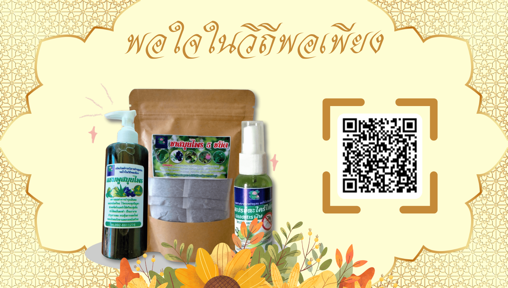
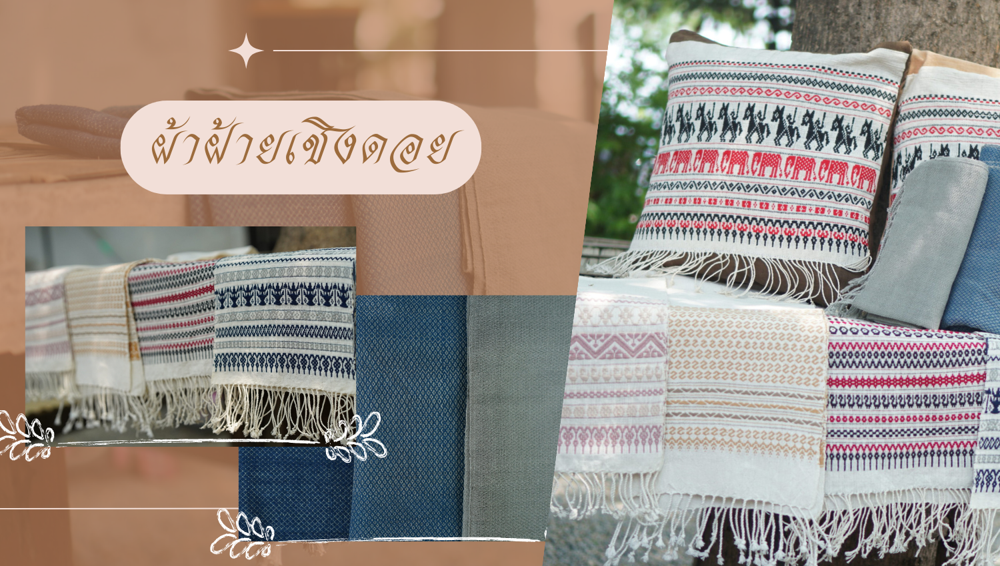
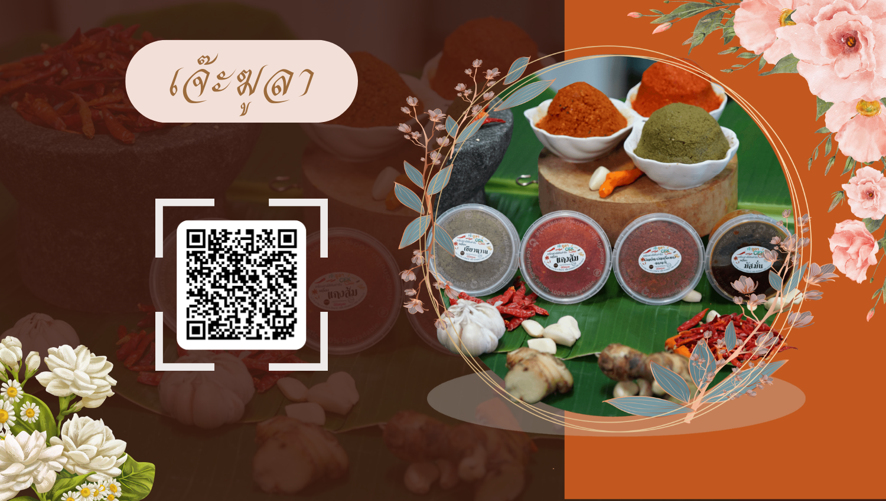

.png)



จากภูมิปัญญาดั้งเดิมสู่การดูแลสุขภาพ
มูลนิธิวัชระดวงแก้ว จังหวัดนครนายก จัดตั้งโครงการพัฒนาทักษะอาชีพการรูปจากสมุนไพรพื้นบ้านใกล้ตัวเพื่อเพิ่มรายได้ของกลุ่มญาติธรรม ด้วยความร่วมมือของภาคีเครือข่าย หมู่บ้านวังทอง อำเภอศรีสำโรง จังหวัดสุโขทัยและ หมู่บ้านดงละคร อำเภอเมือง จังหวัดนครนายก แปรรูปสมุนไพรพื้นบ้าน เช่น แชมพูสมุนไพร 9 ชนิด ลูกประคบ และยาหม่องผักเสี้ยนผี เกิดการประยุกต์ภูมิปัญญาดั้งเดิม ภายใต้แนวคิด “พาหัวใจใกล้กัน” ให้กลายเป็นผลิตภัณฑ์ร่วมสมัย
ผลิตภัณฑ์แปรรูปด้วยวิธีธรรมชาติ จากผลผลิตเกษตรอินทรีย์ในชุมชน
วิสาหกิจชุมชนพอใจในวิถีพอเพียง จัดตั้งโครงการพัฒนาศักยภาพเกษตรกรเพื่อเพิ่มมูลค่าผลิตภัณฑ์ทางการเกษตรให้ครบวงจร เพื่อเป็นศูนย์กลางให้เกษตรกรในอำเภอบ่อพลอยและอำเภอหนองปรือ ซึ่งว่างเว้นจากการทำการเกษตร มาแปรรูปผลผลิตเกษตรอินทรีย์ที่หาได้ภายในชุมชนของตนเองให้มีมูลค่า โดยใช้กระบวนการธรรมชาติ เพิ่มทั้งมูลค่าและเป็นมิตรกับสิ่งแวดล้อมมากขึ้น
ประยุกต์ผ้าไหมแพรวาผสานอัตลักษณ์ชุมชน สู่ผลิตภัณฑ์ดีไซน์ใหม่ ให้ใคร ๆ ก็ใช้ได้
มหาวิทยาลัยราชภัฏมหาสารคาม จังหวัดมหาสารคาม ร่วมมือกับโครงการพัฒนาและส่งเสริมการขายผลิตภัณฑ์ผ้าทอมือของชาวภูไท ซึ่งเรียกกันว่าผ้าไหมแพรวา และเป็นภูมิปัญญาดั้งเดิมของชนกลุ่มน้อยชาวภูไทยมาช้านาน โดยได้มีการนำลายผ้าไหมแบบเดิมมาปรับโฉมใหม่ให้เฉิดฉายบนผลิตภัณฑ์อื่นๆ นอกจากผ้าทอแบบเดิม เช่น กระเป๋า ผ้าพันคอ และอื่นๆ อีกมากมาย โดยได้มีการพัฒนาเทคนิคทั้งการผลิตและการทำตลาด เพื่อให้พัฒนาคุณภาพอยู่เสมอ
จากพืชพรรณในพื้นถิ่น สู่ผลิตภัณฑ์ผ้ามัดย้อมจากสีธรรมชาติ
บริษัท M&T ผ้ามัดย้อมบ้านโคกขาม จังหวัดสมุทรสาคร จัดทำโครงการฝึกอบรมอาชีพการทำผ้ามัดย้อมจากสีธรรมชาติเพื่อพัฒนาศักยภาพคนในชุมชน ด้วยการแปรรูปพืชพรรณในท้องถิ่นให้กลายเป็นผลิตภัณฑ์ผ้ามัดย้อมจากสีธรรมชาติหลากหลายรูปแบบ
“ผ้าฝ้ายทอมือ”
ย้อมสีเส้นฝ้ายด้วยหินธรรมชาติ จากดอยโมคคัลลานสีสวย ติดทน และเป็นมิตรต่อผู้ใช้
วิสาหกิจชุมชน กลุ่มผ้าฝ้ายเชิงดอย จัดทำโครงการพัฒนาเพื่อยกระดับทักษะฝีมือการทอผ้าและเพิ่มโอกาสทางการตลาดของกลุ่มผู้ด้อยโอกาสที่ได้รับผลกระทบจากสถานการณ์โควิด-19 โดยได้นำภูมิปัญญาท้องถิ่นด้านถักทอผสมผสานกับการใช้เทคโนโลยีเพื่อเพิ่มโอกาสทางการตลาดให้กับสินค้าจากท้องถิ่น ยกระดับชีวิตของคนในชุมชน และได้พัฒนาสินค้ามากมาย
สูตรลับเครื่องแกงตำรับปัตตานี จากวัตถุดิบเกษตรอินทรีย์ในชุมชน
วิสาหกิจชุมชนนีปิสกูเละ จังหวัดปัตตานี ตั้งโครงการพัฒนาผลิตภัณฑ์ควบคู่ช่องทางการตลาดเครื่องแกงและสินค้าเกษตรอินทรีย์เพื่อเพิ่มรายได้คนในชุมชน ด้วยการพัฒนาเครื่องแกงสูตรลับเฉพาะของคนในชุมชน โดยใช้วัตถุดิบเกษตรอินทรีย์ในชุมชนเป็นตัวชูโรง ทำให้เกิดผลิตภัณฑ์เครื่องแกงมากมาย